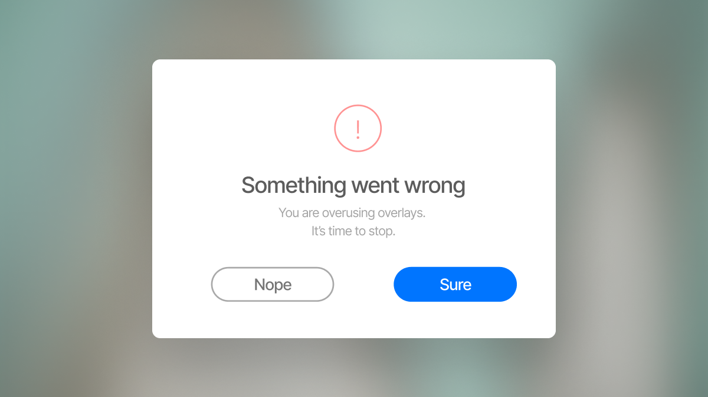

You are doing your overlays wrong
It's no secret that popups are everywhere on the internet. With people finding themselves online every day, web developers have been taking advantage of dialogs to steal the user's focus or complete everyday tasks. As a web designer, it's important to get this part right—there's nothing more hair pulling than overlays that are implemented poorly. The good news is that there are a lot of well-researched guidelines to help you mitigate the user friction of your overlays. By learning from these resources, you can boost conversion and task completion on your website.
Nielsen Norman Group has exceptional guides for many designers looking to improve their user experience—its article Overuse of Overlays: How to Avoid Misusing Lightboxes is no exception. Kathryn Whitenton talks about lightboxes and overlays found across the web while giving helpful examples of how they are overused. Lightboxes and popups are small modal windows that obscure the on-screen content; popups alert or notify the users of backend-related stuff like cookies or login, while lightboxes serve marketing purposes. They both serve the same purpose: they are overlays that grab your user's attention by covering up the main content.
Whitenton can't blame designers for using overlays—they "want to provide quick access to important information…[it] provides more features or content without having to create a new page or modify the navigation" (Whitenton 2015). But while the common dogma of overlay user experience is to provide a close button, cover the page with a dark shade, and make its content accessible, Whitenton argues that designers may end up with a frustrating experience. To create a good overlay, designers need to look for methods to articulate the purpose, circumstances, and desired outcomes. Overlays must be effective in certain contexts—quick-and-dirty methods are not the way to insert additional content to users. By thinking about the five Ws—who, what, when, where, and why—designers are better able to determine if overlays are the right approach for its users.
As a designer, reading Overuse of Overlays: How to Avoid Misusing Lightboxes was insightful and helped me understand the do's and don'ts of overlays. While they could provide a good user experience, I'm more conscious about things to avoid when implementing them on my website. Reading Whitenton's article made me realize that the disadvantages outweigh the advantages of overlays. Even so, I know I shouldn't write them off completely. I will keep Whitenton's advice in mind and do ample user testing to see if overlays bolsters or hinders my user's engagement on my website.
Source: Overuse of Overlays: How to Avoid Misusing Lightboxes